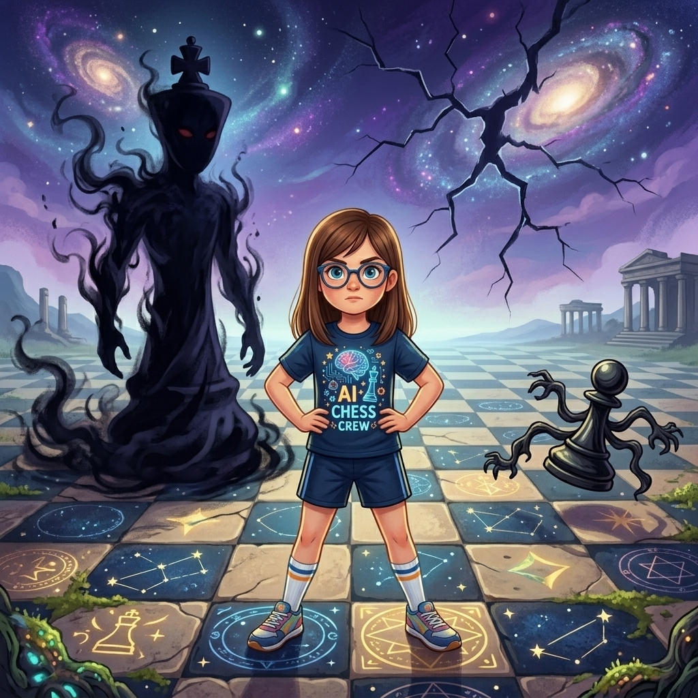
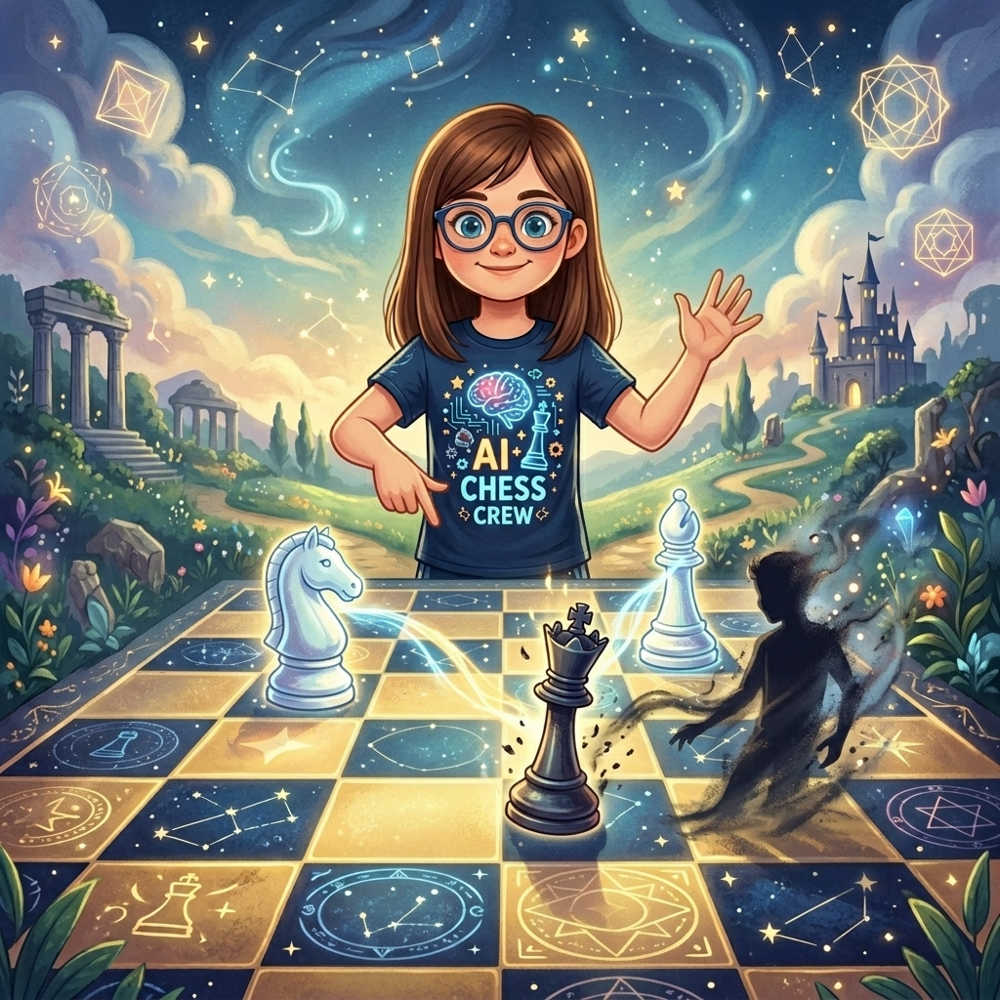

La Sombra que Jugaba
Donde Martina descubre que no todos los que juegan ajedrez respetan el tablero, y que las reglas son el único idioma en el que las piezas pueden confiar
♟️ Ver La Inmortal de Anderssen ↓▶️ ¿Prefieres escuchar la historia? Clic aquí para ver el Audiolibro Animado
Aquella noche, Martina se durmió con una sensación extraña. No era miedo. Martina no le tenía miedo a casi nada. Era otra cosa. Era como cuando miras el tablero y sabes que hay una amenaza pero no ves de dónde viene. Un olor a tormenta antes de la lluvia. Un silencio demasiado silencioso.
Despertó en el Reino de las Sesenta y Cuatro Casillas. Pero algo había cambiado. El cielo cuadriculado tenía una grieta. Una línea fina, oscura, que cruzaba de a1 a h8 como un relámpago congelado. La estrella rebelde de h12 titilaba más rápido de lo normal, como si tuviera taquicardia.
Peoncito la esperaba en la casilla e4. Su bigote estaba perfectamente encerado, lo cual era mala señal. Cuando Peoncito se arreglaba el bigote con tanto esmero, era porque algo le preocupaba y necesitaba sentirse en control de al menos una cosa en su vida.
—Hay algo raro —dijo sin preámbulos—. Muy raro. Más raro que un caballo que salta en Ŋ. Más raro que el certificado médico de la Reina Negra. Más raro que...
—Ya entendí. ¿Qué pasa?
—Las reglas —Peoncito bajó la voz, y su bigote tembló—. Alguien está jugando con las reglas. No respetándolas. Cambiándolas.
Siguieron la grieta del cielo hasta el extremo más oscuro del tablero: la casilla a1. Allí, donde el tablero terminaba y empezaba la nada, había una figura. No era una pieza. Las piezas tenían forma, color, propósito. Esta figura no. Era una sombra con silueta de jugador. Dos brazos. Dos manos. Sin rostro, pero con voz.
—Llegaste —dijo la sombra, y su voz era un susurro que sonaba a varias personas hablando al mismo tiempo pero diciendo cosas distintas—. La niña que juega limpio. La que cree en las reglas. La que piensa que el ajedrez es un caballero con sombrero y no una guerra con trampas.
—El ajedrez no necesita trampas —dijo Martina—. Las trampas son para los que no saben jugar.
La sombra rio. O hizo un ruido que podía interpretarse como risa si uno era muy generoso con la definición de risa.
—Qué inocente. Las trampas son para los que quieren ganar de verdad. Las reglas son para los que se conforman con participar. Yo no participo. Yo gano. Siempre. Con reglas o sin ellas. Con tablero o sin él. Con piezas... o sin ellas.
Chasqueó los dedos —o lo que fueran sus dedos— y del suelo del tablero brotó una pieza que Martina no había visto nunca. Era un peón negro, pero torcido. Avanzó una casilla. Luego otra. Luego una tercera. Tres casillas seguidas. Sin comer. Sin descansar. Sin que nadie se lo impidiera.
—Los peones avanzan de uno en uno —dijo Peoncito, horrorizado—. ¡De uno en uno! ¡Es la regla más básica del universo! ¡Si los peones avanzan de tres en tres, todo se desmorona! ¡Es el caos! ¡Es el fin de la civilización!
—Cálmate —dijo Martina—. Es un truco. Una ilusión.
—No es un truco —dijo la sombra—. Es talento. O mejor dicho: es entender que las reglas no son muros. Son sugerencias. Y las sugerencias se pueden ignorar si eres lo bastante bueno. O lo bastante rápido. O lo bastante... —hizo una pausa— invisible.
Martina la estudió. Aquella sombra no era un jugador. Era la encarnación de todo lo que ella detestaba en el ajedrez. El atajo. La trampa. La victoria sin mérito. El que se salta las filas, el que copia en el examen, el que le susurra al árbitro para que mire hacia otro lado.
—Has venido a desafiarme —dijo Martina, y no era una pregunta.
—He venido a enseñarte algo. El ajedrez que tú juegas... es una postal. Bonita. Educada. Con sus piezas bien alineadas y sus reglas de etiqueta. Pero el mundo real no es así. En el mundo real, la gente hace trampa. Te distrae. Te insulta. Te mueve las piezas cuando no miras. Y gana. Y el árbitro no siempre lo ve. Y el sistema no siempre lo pilla. Y tú te quedas con tu postal y tu derrota y tu sentido de la justicia que no sirve para nada.
Martina sintió un escalofrío. No por la sombra. Por lo que decía. Porque era verdad. En los torneos pasaba. A veces. No siempre. Pero a veces sí.
—Juguemos —dijo Martina—. Una partida de verdad. Con reglas de verdad. Sin trucos. Sin trampas. Sin peones de tres casillas. Tú y yo.
La sombra se inclinó. Era una inclinación burlona, pero inclinación al fin y al cabo.
—Acepto. Pero con una condición. Si gano yo... jugaremos otra. Y otra. Hasta que entiendas que el ajedrez sin trampas es un castillo de arena y el mar siempre gana.
—Y si gano yo —dijo Martina—, te vas. Y no vuelves.
—Las sombras siempre vuelven. Pero por esta noche... trato hecho.

El tablero apareció entre ellas. Las piezas se colocaron con una lentitud inquietante. Martina llevaba las blancas. La sombra, las negras. Alrededor, las piezas del reino observaban en silencio. Torreta había cerrado el carrito. El Alfil Exiliado estaba en su diagonal, inmóvil como una estatua. El Caballo de Ŋ ni siquiera intentaba saltar. El Reloj Parlante, por primera vez en su existencia, estaba en silencio. Total. Absoluto. El silencio más aterrador del mundo.
Martina jugó e4. La sombra respondió e5.
Martina jugó f4. El Gambito de Rey. La apertura más agresiva del ajedrez. La de los que no vienen a empatar. La de los que vienen a sacrificar.
—Gambito de Rey —dijo la sombra, y su voz tenía un tono de respeto que no había mostrado antes—. Interesante. Sacrificas material a cambio de iniciativa. Regalas para atacar. Es una estrategia... casi tramposa.
—No es tramposa —dijo Martina—. Es generosa. Le doy un peón al rival y a cambio recibo el centro, el desarrollo y el ataque. Es un intercambio justo. Las dos partes saben lo que está pasando. Esa es la diferencia entre un sacrificio y una trampa: el sacrificio es transparente.
La sombra capturó el peón: exf4. Martina desarrolló su alfil a c4. La sombra dio jaque con la dama: Dh4+. Martina movió su rey a f1. Una jugada extraña. Perder el enroque. Pero en el Gambito de Rey era normal. El rey blanco se quedaba en el centro. Incómodo. Pero vivo.
—Tu rey está en el centro —dijo la sombra—. Expuesto. Vulnerable. Como un caracol sin concha.
—Mi rey está en el centro porque el centro es mío. Y un rey en el centro propio es más seguro que un rey enrocado en un castillo que se desmorona.
La partida se convirtió en una tormenta. Martina desarrollaba. La sombra intentaba atacar. Martina sacrificó un caballo, luego una torre, luego la otra torre. Cada sacrificio era un cálculo. Cada pieza entregada abría una línea, debilitaba una defensa, creaba una amenaza.
—Estás regalando todo tu ejército —dijo la sombra, y por primera vez su voz sonó ligeramente preocupada—. Te vas a quedar sin nada.
—No lo regalo —dijo Martina—. Lo invierto. Y el retorno de inversión se llama jaque mate.
La sombra capturó la segunda torre. Su dama estaba en a1, su alfil en g1, sus piezas desperdigadas por el tablero como hojas secas. Martina apenas tenía material, pero sus piezas restantes —un alfil, dos caballos, unos pocos peones— estaban en las casillas exactas. Las casillas que importaban.
—Judith Polgar —dijo Martina— enseñó que no necesitas más piezas que tu rival para ganar. Solo necesitas que las que tienes estén en el lugar correcto, en el momento correcto, haciendo el trabajo correcto. Y Mikhail Tal enseñó que a veces, para entrar en el lugar correcto, tienes que volar por los aires las puertas.
Jugó Ag5. El alfil blanco apuntó a la dama negra. La sombra movió su dama a b2, capturando otro peón. Codiciosa. Siempre codiciosa.
Martina jugó Cd5. El caballo blanco saltó al centro, amenazando múltiples jaques. La sombra intentó defender. Demasiado tarde.
Martina jugó Df6. La dama blanca se plantó frente al rey negro. Jaque. El rey capturó la dama. El sacrificio final.
—¿Sacrificas la dama? —La sombra no daba crédito—. ¿Tu última pieza valiosa?
—No es la última —dijo Martina—. Es la primera del resto de mi ataque.
Y jugó Ae7 mate.
Alfil y caballo. Dos piezas menores. Las más humildes del tablero. Dando jaque mate a un rey rodeado de piezas mayores que no podían mover. Que no podían ayudar. Que estaban en el lugar equivocado porque se habían pasado la partida persiguiendo peones gratis en vez de defender a su propio monarca.

La sombra se quedó inmóvil. El tablero vibró una vez, dos veces, y luego se quedó quieto. La grieta del cielo empezó a cerrarse, pero muy lentamente. Como si no estuviera del todo convencida.
—Has ganado —dijo la sombra—. Con reglas. Con sacrificios. Con estilo. Te felicito.
—No necesito tu felicitación. Necesito que te vayas.
—Me iré. Pero antes quiero que entiendas algo. —La sombra se acercó. Su falta de rostro era más inquietante que cualquier cara— Yo no existo solo en este reino. Existo en todos los tableros. En todos los torneos. En todos los patios de colegio donde un niño mueve una pieza mientras el otro mira para otro lado. En todas las salas donde un jugador le susurra algo al árbitro y el rival no se entera. En todos los partidos donde alguien gana sin merecerlo porque encontró el atajo en vez del camino.
Martina la miró fijamente.
—Lo sé.
—¿Y qué vas a hacer cuando me encuentres allí? ¿En tu mundo? ¿Cuando no puedas vencerme con una partida porque no hay partida que valga? ¿Cuando el que haga trampa no sea una sombra sino un niño de tu edad con cara de bueno y un árbitro que mira hacia otro lado?
Martina no respondió de inmediato. Porque no tenía una respuesta fácil. Porque la sombra tenía razón en algo: el mundo real no era un tablero con reglas perfectas. A veces la gente hacía trampa y ganaba. Y no siempre había un árbitro que lo viera. Y no siempre el sistema lo corregía.
Pero luego levantó la cabeza.
—Cuando eso pase —dijo—, jugaré mi mejor ajedrez. Denunciaré la trampa si puedo demostrarla. Y si no puedo demostrarla y el tramposo gana... —respiró hondo—... volveré al día siguiente y jugaré otra partida. Y otra. Y otra. Porque el ajedrez no se acaba cuando pierdes una partida. Se acaba cuando dejas de luchar. Y yo no he dejado de luchar nunca.
La sombra la observó en silencio. Luego, lentamente, empezó a desvanecerse.
—Me gustas, niña —dijo, y su voz ya era un eco—. Eres de las que pierden y vuelven. De las que sangran y sonríen. De las que saben que el juego es más grande que la victoria.
—No necesito que te guste.
—Lo sé. Por eso me gustas.
Y se fue. Pero la grieta del cielo no se cerró del todo. Quedó una línea finísima, casi invisible, que cruzaba de a1 a h8. Como una cicatriz. Como un recordatorio.
Las piezas del reino volvieron a respirar. Torreta abrió el carrito con manos temblorosas. «Empanadas para todos —dijo—. Por cuenta de la casa. Necesitamos calor. Necesitamos masa. Necesitamos relleno.»
El Caballo de Ŋ intentó un salto de celebración y aterrizó en una casilla que no existía, pero por una vez a nadie le importó.
Peoncito se acercó a Martina. Su bigote seguía perfectamente encerado, pero ahora por una razón distinta: orgullo.
—No me ha gustado esa sombra —dijo—. No me ha gustado nada. Hablaba raro. Olía raro. Y movía peones de tres en tres. Eso es blasfemia.
—Lo sé.
—Pero dijiste algo importante. Algo sobre volver al día siguiente y jugar otra partida.
—Es lo único que se puede hacer —dijo Martina—. El ajedrez no se acaba cuando pierdes. Se acaba cuando dejas de intentarlo. Y las trampas existen. Y la gente mala existe. Y los árbitros que no ven existen. Pero el tablero sigue ahí. Y mientras el tablero siga ahí, yo seguiré jugando.
Peoncito asintió lentamente.
—Eso es muy bonito. Pero yo le habría dado un bigotazo.
—No tienes brazos.
—Lo habría intentado igual.
Martina sonrió. Y por un momento, la grieta del cielo fue solo una raya. No una amenaza. Una raya. Y las rayas se pueden ignorar. O se pueden recordar. Martina decidió recordarla.
Esa noche, antes de dormirse del todo, Martina oyó la voz de la sombra en el borde del sueño. No era una amenaza. Era una pregunta.
«¿Estás lista?»
Martina no respondió. Pero en su mente, las piezas ya se estaban colocando para la próxima partida.
Fin del noveno cuento.
Continuará…
🏛️ El Secreto detrás del Cuento
Martina vence a la sombra tramposa usando las mismas jugadas de la famosa "Partida Inmortal" jugada entre Adolf Anderssen y Lionel Kieseritzky en Londres, 1851. Esta partida es legendaria porque las blancas sacrificaron casi todo su ejército (un alfil, dos torres y la dama) para dar un jaque mate espectacular con solo tres piezas menores. ¡Repasa esta joya del ataque y la iniciativa!
¿Te gustó este cuento? Compártelo: